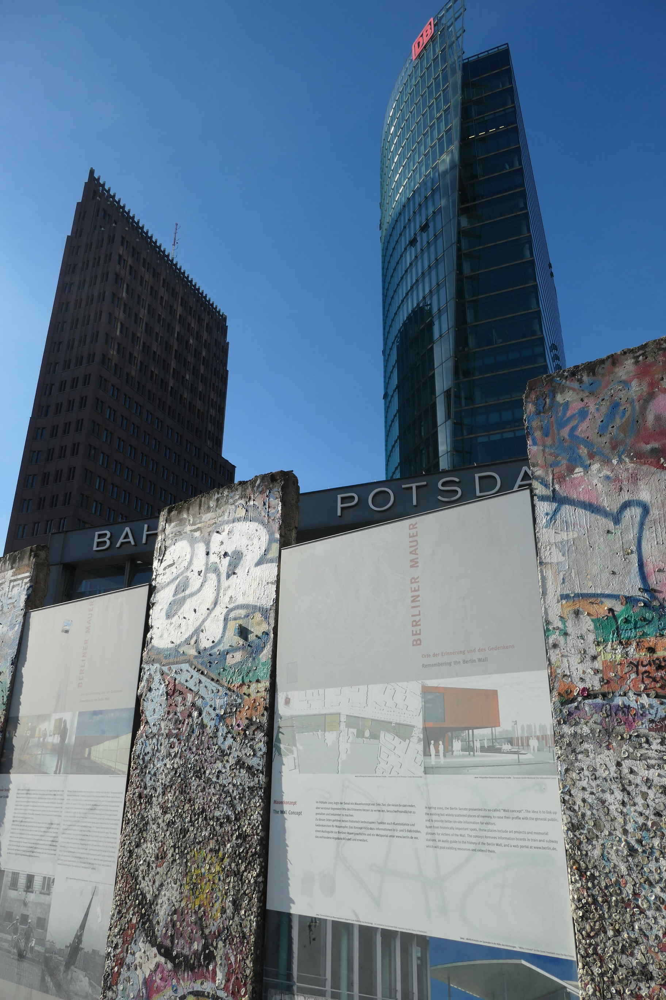

Hi There! Some snapshots of my travels, cherished memories of places near and far.
Berlin, Germany February 2019

This is a snapshot of the Potzdamer Platz showing part of the modern architecture and remains
of the wall once dividing East and West Germany. It is a very powerful reminder of german history.